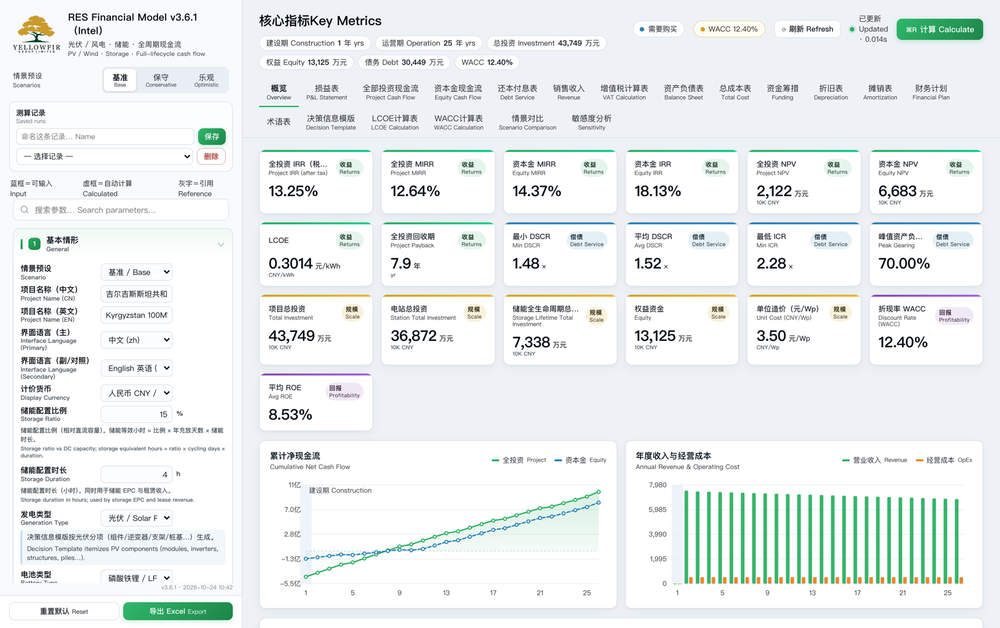
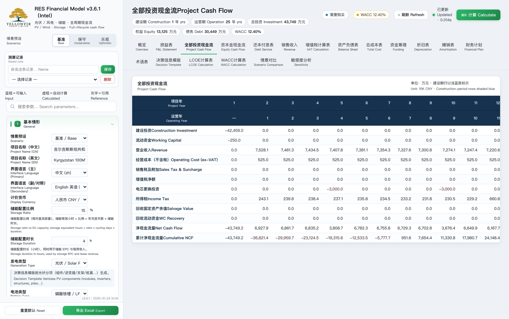
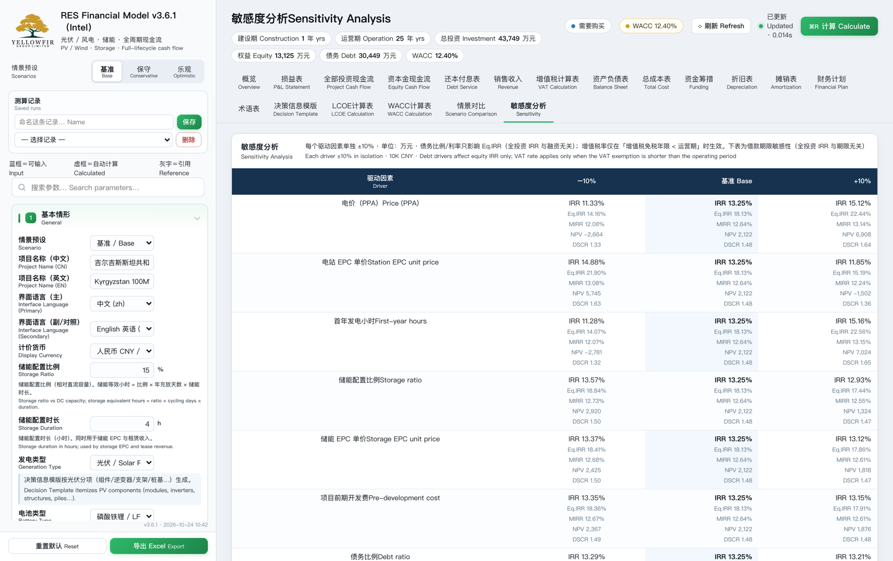
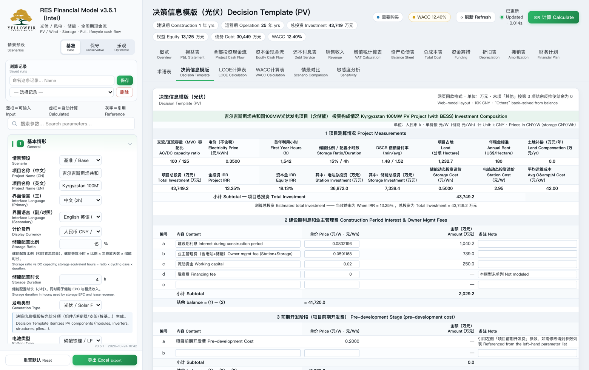

面向光伏、风电与储能项目的桌面建模工具：14 张专业报表、多币种 WACC、LCOE、敏感性分析与情景对比，17 种界面语言、任选两种双语对照导出。输入参数即可得到完整的三表联动与投资指标。 A desktop modeling tool for solar, wind and storage projects — 14 statements, multi-currency WACC, LCOE, sensitivity and scenario comparison, 17 interface languages and export in any bilingual pair.
软件提供的是计算工具，输出为模型计算结果；不提供投资建议、不代客决策。 The software is a calculation tool. Its output is a model result; it does not provide investment advice or make decisions on your behalf.
损益表、全投资与资本金现金流、还本付息、资产负债表、总成本、折旧摊销等，三表联动、自动平衡。P&L, project and equity cash flow, debt service, balance sheet, total cost, depreciation — linked and automatically balanced.
按国别与行业取 βu，CAPM 计算 WACC；支持人民币 / 美元 / 本币三种口径对照。Bottom-up beta by country and sector, CAPM-based WACC, with CNY / USD / local-currency comparison.
平准化度电成本、偿债覆盖率、ICR、回收期等指标，随参数实时刷新。Levelised cost of energy, debt service coverage, interest cover and payback — updated live with every input change.
电价、造价、发电小时、储能配置、利率、借款期限等多因素敏感性表。Multi-driver sensitivity across tariff, capex, generation hours, storage sizing, interest rate and loan tenor.
可编辑的投资构成模版，EPC、管理费、前期费用分项列示并自动校验结余。An editable investment-composition template covering EPC, management fees and development costs, with automatic balance checks.
界面支持 17 种语言，可任选一种作主语言、另一种作对照语言；导出的 Excel 工作簿同样按该语言对双语对照输出。17 interface languages — pick any two as a bilingual pair, and exported Excel workbooks follow the same pair.
全投资与资本金 IRR、NPV、回收期，按你输入的电价、造价、发电量直接算出，并给出敏感性区间。Project and equity IRR, NPV and payback — computed from your own tariff, capex and generation inputs, with sensitivity ranges.
按 DSCR 与 ICR 反推可承受的杠杆与期限，逐年给出偿债覆盖率，标出最低年份。Back-solve the sustainable leverage and tenor from DSCR and ICR requirements, year by year, flagging the tightest year.
给定目标 IRR 反算临界电价；或给定电价反算盈亏平衡负荷率与盈亏平衡造价。Back-solve the break-even tariff for a target IRR, or the break-even load factor and capex for a given tariff.
按配置比例与时长建模，储能 EPC、初始总投资、全寿命周期总投资分三段列示，电芯更换按实际年度计入现金流。Model by ratio and duration; storage EPC, initial investment and lifecycle investment are shown separately, with cell replacements booked in the year they occur.
企业所得税（含免税期）、增值税全链（价税分离、留抵结转）、地方提留，逐项可开关。Corporate income tax (including holiday periods), the full VAT chain (tax-exclusive split and credit carry-forward) and local levies — each switchable.
情景对比与多因素敏感性，直接把"造价涨 10%、电价降 5%"这类问题量化成 IRR 的点差。Scenario comparison and multi-factor sensitivity turn questions like "capex +10%, tariff −5%" into a quantified IRR spread.
不是一张 Excel 套公式，而是一个三表联动、口径可追溯的计算引擎。 Not a spreadsheet with formulas pasted in, but a calculation engine with linked statements and traceable conventions.
损益表 → 现金流 → 资产负债表自动勾稽，逐年校验平衡（差额为 0 才算通过）。P&L → cash flow → balance sheet tie out automatically, with a yearly balance check that must reconcile to zero.
全投资与资本金两套现金流严格分开：全投资按息税前计税、不含建设期利息与预提税；资本金含还本付息与预提税。Project and equity cash flows are kept strictly separate: the project view is taxed on EBIT and excludes construction-period interest and withholding tax; the equity view includes debt service and withholding tax.
每个参数都有单位与取值说明；导出为 Excel 后可逐格复核算式，不锁公式。Every parameter carries its unit and definition; exported workbooks keep live formulas so each figure can be re-checked cell by cell.
按国别的无风险利率、国别风险溢价与行业 βu 合成 WACC，折现币种可选人民币/美元/本币。WACC built from country risk-free rates, country risk premiums and sector beta, with the discount currency selectable as CNY, USD or local.
以下均为软件实际界面截图（未做美化处理）。 All screenshots below are of the actual software interface, unretouched.




macOS 与 Windows 桌面版（按平台下载），离线运行，计算不限次数。Desktop builds for macOS and Windows, running offline with unlimited calculations.
损益、全投资现金流、资本金现金流、还本付息、资产负债表、总成本、销售收入、资金筹措、折旧、摊销、财务计划等。P&L, project cash flow, equity cash flow, debt service, balance sheet, total cost, revenue, funding, depreciation, amortisation and financial plan.
模型结果一键导出工作簿，按当前选定的主／对照语言双语输出，便于归档、复核与提交。Export results to a workbook in the selected language pair for filing, review and submission.
许可期内免费获得同大版本更新；口径变更会在更新说明中列明。Free updates within the same major version during the licence term; any change in modelling conventions is documented in the release notes.
在浏览器里直接试算，无需安装，与桌面版同一套界面与计算引擎。首次进入有 10 分钟全功能体验（可改全部 134 项参数，但不能导出）；10 分钟后进入体验模式，16 项关键参数仍可调（规模与发电 · 电价与收入 · 投资与储能 · 融资与汇率），其余参数锁定。界面语言（主／副）随时切换、不锁定。 Run the model in your browser — same interface and same engine as the desktop app. The first 10 minutes are a full trial (all 134 parameters, no export); afterwards 16 key assumptions stay editable and the rest are locked. Interface languages (primary/secondary) can be switched at any time and are never locked.
安装包为授权版，安装后 1 小时免费试用；购买后输入许可证即可继续使用。 Installers are licensed builds with a 1-hour trial; enter your licence after purchase to continue using the software.
可以。安装后自动获得 1 小时免费试用，无需注册或绑定支付方式。试用时长按累计使用计算。Yes. Each installation includes a 1-hour free trial with no sign-up or payment details required. Trial time is counted cumulatively.
许可证与设备绑定，可在同一设备上重复激活；更换电脑请联系我们办理迁移。Licences are bound to a device and can be reactivated on the same device. To move to a new computer, contact us and we will transfer it.
不是。本软件是财务建模与计算工具，输出结果取决于用户输入的全部假设；不构成投资、法律或税务建议。No. This software is a financial modelling and calculation tool; its output depends entirely on the assumptions you enter and does not constitute investment, legal or tax advice.
光伏、风电（陆上/海上）与配套储能项目；支持光伏与风电分别建模。Solar, wind (onshore and offshore) and co-located storage; solar and wind are modelled separately.
软件里点顶栏授权标识打开授权窗，即可看到形如 7CCB-47C1-8373-D5C6 的机器码；网页体验版点右下角「机器码」按钮同样可以查看并复制。授权时把机器码和邮箱一并发给我们即可。Click the licence badge in the app, or the “Machine code” button on the web demo; copy the code (e.g. 7CCB-47C1-8373-D5C6) and send it with your email to activate.
在软件授权窗「迁移授权」里输入订单号或购买时登记的邮箱，授权即迁到新电脑，旧电脑同时失效（限 3 次、间隔 7 天）。网页端打开体验版点「一键直连」或输入邮箱同样跟随。In the app, open “Move licence” and enter your order ID or the email used at purchase — the licence moves to the new computer and the old one is invalidated (3 moves max, 7-day interval). The web demo follows automatically.
首次进入有 10 分钟全功能体验（可改全部参数，但不可导出）；10 分钟后进入体验模式，16 项关键参数仍可调整，其余锁定，报表继续实时重算。The first 10 minutes are a full-featured trial (all parameters, no export). Afterwards 16 key assumptions stay editable, the rest are locked, and every statement keeps recalculating live.
详见 Refund 退款政策。See the Refund Policy for details.
界面支持 17 种语言，可任选一种作主语言、另一种作对照语言，导出的工作簿按同一语言对双语输出；折现币种可选人民币、美元或项目所在国本币。The interface ships with 17 languages; pick any two as a bilingual pair and exported workbooks follow that pair. The discount currency can be CNY, USD or the project country's local currency.